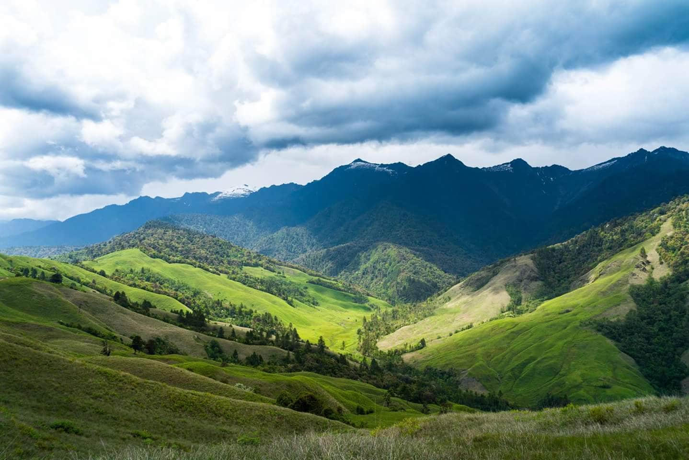
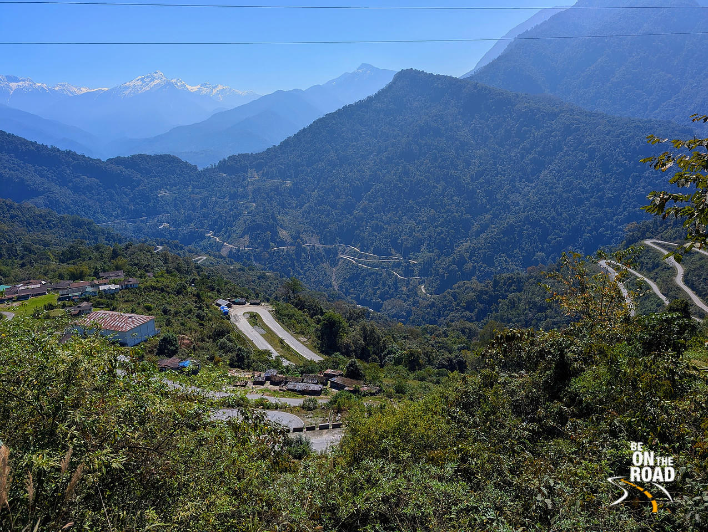
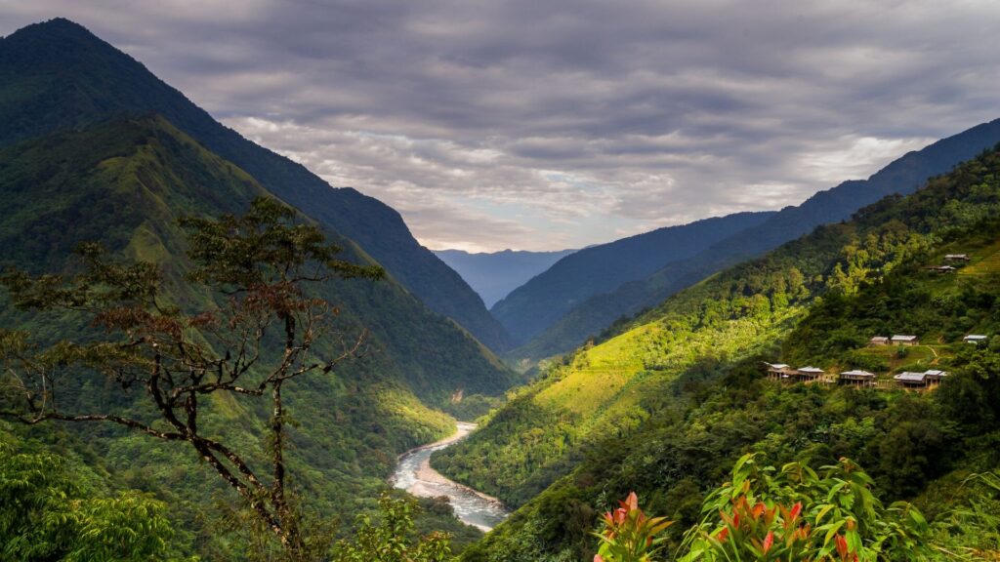

The far headquarters of Dibang — forest roads and a thin calendar of visitors
Anini is the headquarters of Dibang Valley, reached by a long forest corridor rather than a short hill hop. The town itself is small. What you come for is the country around it — river gorges, high pasture and a sense of eastern Arunachal that the Tawang road never shows.
This is not a first Arunachal trip. Give it a week, a buffer day and a vehicle that can handle broken stretches. Monsoon is the wrong season. Winter is cold and clearer. Permits and road status should be checked before you leave the plains.

The first comfortable weeks after winter ice.
Green, wet and frequently interrupted.
The sensible first attempt at Dibang.
Cold, quiet and the clearest long views.



Share total days and starting city. We will be direct about whether Dibang belongs on this journey or on a later one.